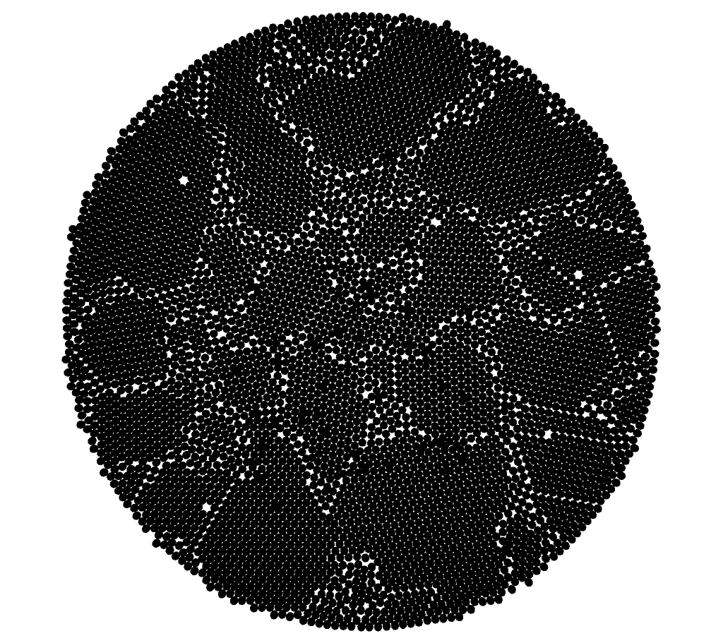
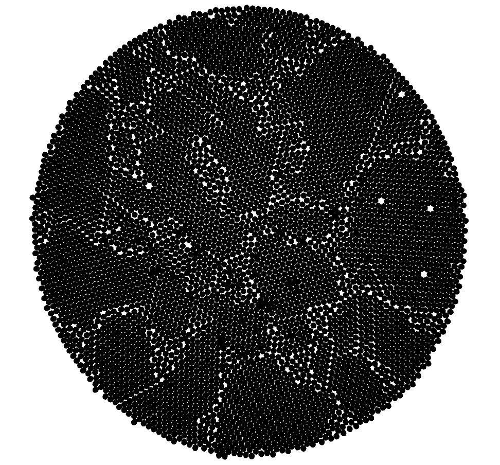
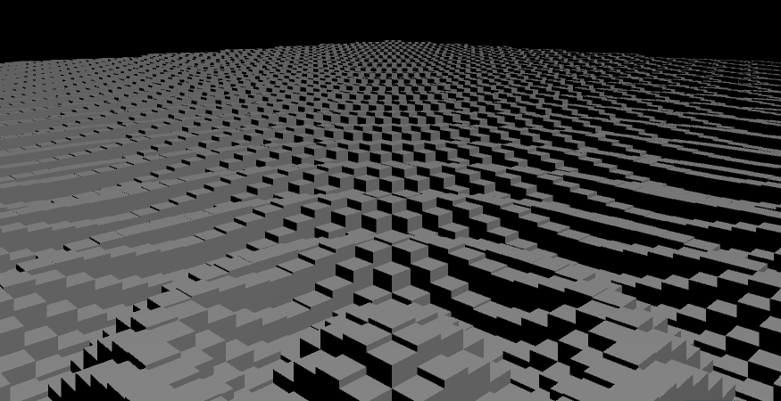

Phong Lighting Model, Subtractive Rendering using Intersections of spaces and
Raymarching. (Fragment Shader)
Phong Lighting Model, Surface Displacement using sinusoidal signals and noise. (Fragment Shader)
Phong Lighting Model, Surface Displacement using sinusoidal signals in world space. (Fragment Shader)
Surface Displaced and colored by surface normals, with a leftward sweeping visual effect.
Reminiscent of iridescent oil. (Fragment Shader)
Atom

Packing - Wait for it!

This process creates unique crystalline packing structures.




This zooming tile effect is completely customizable.


Spirals generated from sinusoidal interference patterns.